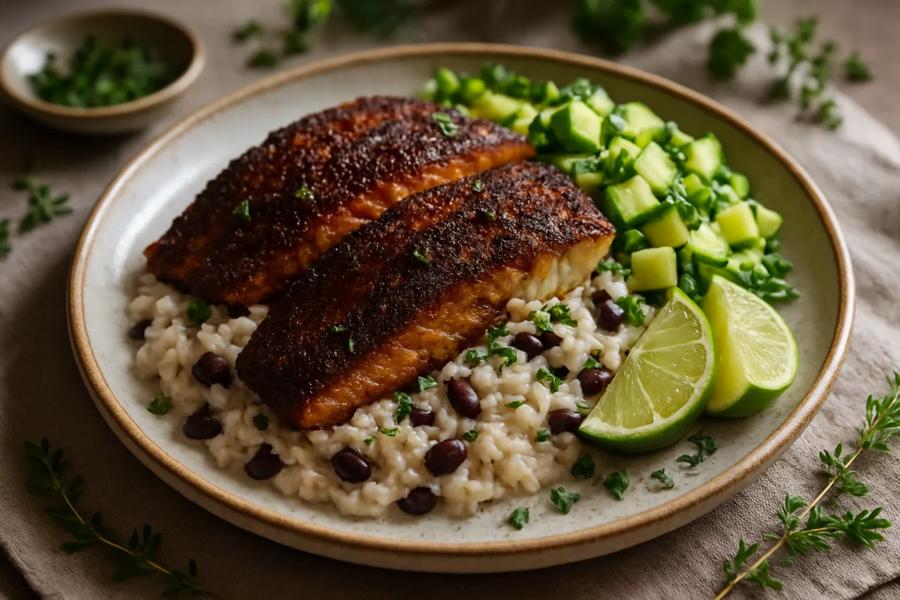

Caribbean Jerk Snapper with Coconut Rice & Black Beans
Jerk-spiced snapper seared crisp over creamy coconut rice and black beans, with an avocado-cucumber salad.
Open recipe →
Jerk-spiced snapper seared crisp over creamy coconut rice and black beans, with an avocado-cucumber salad.
Open recipe →